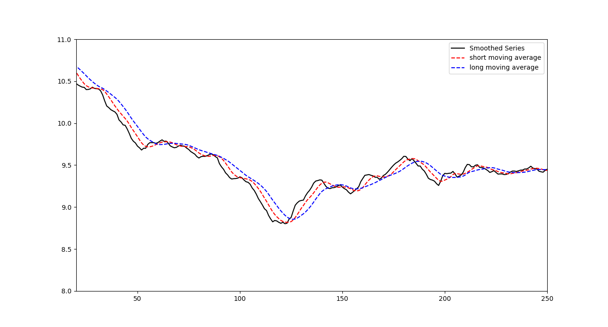

Moving averages are widely recognized as valuable indicators due to their ability to smooth out price fluctuations and provide a clearer representation of underlying trends. By analyzing the relationship between the price and moving averages, traders can make informed decisions regarding buying or selling assets. Additionally, they can serve as potential support or resistance lines.
In general, an upward trend can be inferred when the price surpasses a moving average, while a downward trend can be identified when the price falls below a moving average. Crossovers can serve as reliable buy or sell signals. One type of crossover is a price crossover, which occurs when the price intersects a moving average, indicating a potential shift in trend. Another approach involves using two moving averages on a chart: a shorter-term moving average and a longer-term moving average. A buy signal is generated when the shorter-term moving average crosses above the longer-term moving average, suggesting an upward trend. Conversely, a sell signal is triggered when the shorter-term moving average crosses below the longer-term moving average. In this model the moving averages are calculated with pandas.DataFrame.rolling. The periods are one and two weeks respectively.
def get_moving_average(self):
# get moving average of short and long periods
self.get_smooth()
moving_average_short = self.data["smoothed_series"].rolling(configur.ma_short_period).mean()
moving_average_long = self.data["smoothed_series"].rolling(configur.ma_long_period).mean()
moving_average_short = moving_average_short.fillna(0)
moving_average_long = moving_average_long.fillna(0)
self.data["moving_average_short"] = moving_average_short
self.data["moving_average_long"] = moving_average_long
return moving_average_short, moving_average_long

The Stochastic Oscillator is a popular momentum indicator used in technical analysis to assess the price momentum of a financial instrument, such as a stock, currency pair, or commodity. It helps traders and investors identify potential overbought and oversold conditions in the market, indicating possible trend reversals or corrections.
The Stochastic Oscillator formula is given by:
Where:
- \( %K \) is the value of the Stochastic Oscillator at a given time.
- \( C \) is the most recent closing price of the asset.
- \( L_{n} \) is the lowest price observed over the last n periods.
- \( H_{n} \) is the highest price observed over the last n periods.